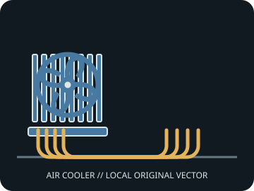

[ INDIVIDUAL COMPONENT // AIR CPU COOLING ]
Scythe Mugen 6
Single-tower air cooler with an offset heatsink and a 120 mm Wonder Tornado PWM fan.

IDENTIFICATION: Match the model/SKU, revision, and supplied bracket. Dimensions and socket coverage can vary by package or region; verify the included hardware and current manufacturer documentation before installation.
Dimensions, fit, and manufacturer specifications
| Exact model / SKU | SCMG-6000 |
|---|---|
| Overall dimensions | 132 × 106 × 154 mm (W × D × H), with the supplied fan. |
| Installed height / case clearance | 154 mm. |
| Supplied fan(s) | 1 × 120 × 120 × 26 mm Wonder Tornado 120 PWM fan; 350 ± 200 to 2,000 ± 10% rpm. |
| Noise / airflow (manufacturer figures) | Manufacturer fan ratings: 3.00–26.88 dB(A) and 7.68–60.29 CFM. Values describe the included fan's published operating range. |
| Heat pipes | Six 6 mm nickel-plated copper heat pipes. |
| Socket bracket compatibility | Intel LGA 1851 / 1700 / 1200 / 115x / 2011 / 2066; AMD AM5 / AM4. Use the included H.P.M.S. V mounting parts specified for the socket. |
| RAM / motherboard clearance | Scythe describes the offset heatsink as improving memory compatibility; confirm motherboard-specific DIMM and VRM clearance using the installation drawing. |
Cooler height is not a complete fit check: account for fan lift, side-panel clearance, motherboard heatsinks, DIMM position, and any case tolerance.
Installation and service notes
- Install only with the model-specific manual and retention hardware for the selected CPU socket. Confirm orientation and bracket standoff before tightening.
- Apply thermal interface material as directed by the cooler maker. Tighten evenly, connect PWM leads to suitable headers, and verify fan tachometer operation.
- Disconnect power and restrain fan blades during cleaning. Check for fin damage, cable contact, or loosened fasteners during service.
Manufacturer sources
- Scythe — Mugen 6 product pageManufacturer dimensions, included fan, heat pipes, and socket information.
- Scythe — Mugen 6 installation manual (PDF)Manufacturer mounting instructions and fit diagrams for SCMG-6000.
Static reference only. Manufacturers can change regional SKUs, bracket bundles, product specifications, and support documents; check the documentation for the exact unit.